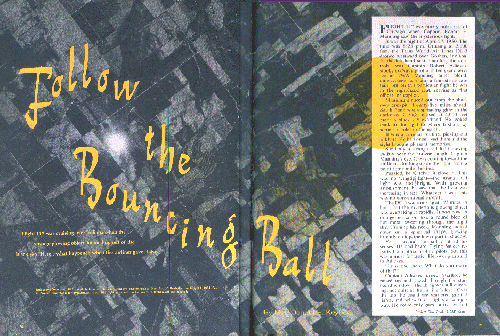

Le vol 117 passait au-dessus de l'Indiana lorsqu'un objet luisant étrange émergea du ciel noir. Voici ce qui
arriva lorsque l'avion de ligne le pris en chasse
Photo aérienne au-dessus de Richmond (Indiana), fut prise par le photographe militaire major Leo N. Brubaker le
. Enwvoyé au projet Blue Book pour évaluation, la lumière
brillante fut décrite comme étant le reflet du Soleil sur des
cristaux de glace [Projet Blue Book - USAF]

Le vol 117 était à 90 miles à l'est de Chicago lorsque le capitaine Robert F. Manning vit la lumière
mystérieuse.
C'était la nuit du 27 avril 1950. Il était 20 h 25. Volant à 2000 pieds, le
DC-3 de la Trans World Air Lines bourdonnait vers l'Ouest
au-dessus de Goshen, Indiana. Dans le siège de gauche, tenant les manettes, se trouvait le capitaine Robert Adickes,
ancien pilote chevronné de la Marine avec 10 ans de service à la TWA. Manning, plus grand, blond, au ton
calme, était également un capitaine à 4 bandes, mais sur ce vol particulier il était dans le siège de droite, servant
comme 1er officier, ou co-pilote.
Manning jetta un coup d'œil hors du cockpit dans l'obscurité. A 25
miles devant, South Bend était une lueur diffuse dans l'obscurité. Les nuages massés à 4000
pieds formaient un ciel noir au-dessus d'eux. Il regardait à l'arrière sur la droite où Elkhart se trouvait à
quelques 6
miles au nord.
C'était une habitude familière, repérer Elkhart. Il avait vécu là et le regard amenait des souvenirs agréables.
Soudain une lumière rouge étrange se déplaçant rapidement près de l'horizon attira l'œil du capitaine Manning. Elle
venait vers l'avion de ligne, grimpant sur la droite, depuis un point à quelques miles en-dessous.
Intrigué, il la regarda de plus près. Ce n'était pas un feu de position d'une aile ? l'étrange lumière rouge était
trop brillante. Avec un étonnement grandissant, il vit que la lumière gagnait en taille. Quoi que c'était, ce n'était
pas un appareil conventionnel.
Le DC-3 évoluait à 175
miles/h, mais le mystérieux objet luisant les rattrapait rapidement. Il était maintenant de couleur rouge-orangée,
comme un blob rond de métal chaud balayant le ciel nocturne. Tordant son cou, Manning regarda en bas une forme
sphérique, luisant brillamment à son sommet, la partie inférieure étant dans l'ombre.
Pendant une seconde, il douta presque de ses sens. Il avait entendu des signalements de Soucoupes Volantes par
d'autres pilotes de ligne, mais ceci était presque hallucinant. Il se
retourna vers Adickes.
Regarde ici. Qu'est-ce que tu dis de ça ?
Nous avons observé un objet étrange au large de notre aile tribord a dit le capitaine Robert Adickes à Chicago sur la radio. Le disque apparut
près de South Bend, l'avion le pris en chasse, pour le perdre seulement quelques minutes plus tard [Wide World]
Le capitaine Adickes se tourna. Effaré, il se leva et regarda à travers la fenêtre tribord. La chose montait
toujours, pas tout à fait au niveau de l'avion de ligne. Au-dessus du sommet, il pouvait voir des lumières au sol
éparses, et en-dessous, les feux de voitures sur une autoroute. Il ne pouvait que supposer sa taille, mais il avait
l'air de faire au moins 20 pieds de diamètre, probablement plus proche de 50.
Les 2 pilotes se regardèrent l'un l'autre, puis Adickes chercha son micro et appela la TWA à Chicago.
Nous avons vu un objet étrange au large de notre aile tribord, dit-il rapidement au dispatcher. Demandez à
l'ATC s'il y a un traffic quelconque près de nous.
En un moment, la réponse arriva. Le Contrôle du Traffic Aérien n'avait pas de trace de quoi que ce soit près de leur
appareil.
Adickes et Manning regardèrent dehors à nouveau vers la Soucoupe. Elle semblait être à 1/2 mile de distance,
maintenant calée sur le rythme de l'avion. Adickes secoua la tête, incrédule. On aurait dit exactement comme une
énorme roue roulant le long d'une rue, mais comment une chose pareille pouvait-elle rester dans les airs ?
Je vais essayer de partir discrêtement dessus, dit-il à Manning. Il vit basculer l'appareil gentiment, mais le
disque luisant cette fois glissa au loin, en gardant ses distances. Il essaya à nouveau, avec le même résultat.
Appelle l'hôtesse, dit-il abruptement. Je veux que quelqu'un d'autre voie ce truc.
De retour à la cabine, l'hôtesse Gloria Hinshaw perçu le signal clignotant fébrilement. Elle se précipita le long de
l'allée et entra dans le cockpit.
Jettez un œil là-bas, dit Adickes. Il pointa son doigt du côté de l'aile droite.
L'hôtesse ébahie regardait dehors la Soucoupe luisante. Elle était une nouvelle fois parallèle avec l'avion.
Mais qu'est-ce que c'est ? s'exclama Gloria Hinshaw.
On ne sait pas, dit Manning.
Repartez et dites-le aux passagers, dit rapidement Adickes. Faites-les le regarder.
L'hôtesse retourna dans le compartiment voyageurs. Le 1er passager, dans un siège seul sur la droite, semblait
endormi. Elle se tourna vers les 2 à travers l'allée ? Clifford H. Jenkins et Dean C. Bourland, tous 2 de chez Boeing
Aircraft.
Il y a une Soucoupe Volante là-bas. Regardez côté tribord.
Jenkins rigola, puis vit sur son visage qu'elle n'avait pas l'air de plaisanter. Il bondit et scruta à travers le
hublot opposé, Bourland s'accroupissant sous lui. Depuis le compartiment voyageurs éclairé, la forme de la Soucoupe
était moins distincte. Pour Jenkins, cela ressemblait à un ensemble flou de fenêtres éclairées d'une drôle de lumière
rouge. Cela ne ressemblait à rien qu'il ait jamais vu ? et il connaissait tous les types d'avions.
Tandis que Jenkins et Bourland regardaient la Soucoupe, le capitaine Adickes sortit en hâte du cockpit. Le passager
assoupi se réveilla alors qu'Adickes se penchait pour regarder dehors à travers son hublot.
Quel est le problème - qu'est-ce qui se passe ? demanda-t-il.
Regardez là, dit Adickes. Vous voyez cette chose ? Il se tourna vers les 2 hommes de Boeing.
Vous l'avez vu ? Je veux des tas de témoins de ça.
Les passagers du côté tribord regardaient la Soucoupe, mais sur bâbord à l'arrière, l'hôtesse avait des problèmes.
Certains des passagers, dont un qui avait certainement bu un verre ou 2 avant d'embarquer, pensaient que tout cela
était un gag.
Bien sûr, allons tous voir la Soucoupe Volante, ricanna l'homme émêché. Allons voir les petits hommes de Mars.
Il s'arrêta, la bouche restée ouverte, lorsqu'il vit l'étrange objet rouge luisant au-delà de l'aile. Les yeux grands
ouverts, il s'abaissa sur son siège.
Lorsque Adickes revint au cockpit, Manning reposait son micro.
J'ai appelé le South Bend radio range, dit Manning. Je leur ai dit de sortir et de regarder s'ils pouvaient
repérer le truc.
Adickes prit les contrôles, fit une tentative plus précautionneuse pour arriver furtivement sur la Soucoupe. Lorsque
la chose glissa à nouveau au loin, il vira alentours rapidement, pour la prendre en chasse directement.
Instantanément, le disque luisant plongea. En à peine plus de 1 s, il descendit à 1500 pieds, fonçant vers le nord
derrière South Bend. Sa vitesse, estima Adickes, était proche de 400 miles/h. Pendant quelques minutes de plus, la
lumière bizarre resta visible ? un point rouge lumineux diminuant devant le sol. Puis il s'atténua et disparut.
Le flash radio de Adickes à Chicago avait été capté par des journalistes. Des reporters attendaient à l'aéroport, et
l'histoire fut bientôt sur les câbles. Elle attira une attention inhabituelle. Ce n'était pas juste encore une
histoire de Soucoupe Volante, de laquelle on pouvait se moquer. En plus de l'équipage, il y avait des passagers
témoins. Adickes, se souvenant du ridicule auquel d'autres pilotes avaient fait face, avait fait particulièrement
attention à ça.
En raison de la nature inhabituelle de l'observation de Soucoupe de l'avion de ligne, True me demanda de mener une enquête complète. Chacun des 3
membres d'équipage est interrogé. Tous sauf 5 des 16 passagers ont été localisés. Des récits détaillés de témoins
occulaires ont été obtenus par des appels téléphoniques longue distance à Seattle, Minneapolis, Chicago, Dayton et
plusieurs autres villes.
Comme nous nous y attendions, il y eut des différences dans les histoires des témoins. Toutes ces variations ont été
notées. Le résultat est ce rapport, que nous croyons être un récit précis et impartial de ce qui s'est effectivement
passé la nuit du 27 avril.
Avant de rencontrer les 2 pilotes du vol 117, je parlais avec d'autres à la TWA
qui les connaissaient.
Calmes... modérés... sérieux... prudents. C'était certains des termes qui furent appliqués aux 2 hommes.
Personnes à la TWA ne remet en question que Adickes et Manning aient simplement vu ce qu'ils ont décrit.
Manning, qui vit la Soucoupe le 1er, a été un pilote de l'Air Force. Il a volé 6
ans sur des lignes aériennes ; son expérience de vol totalise près de 6000 h.
Au moment ou j'ai rencontré Manning, à l'aéroport de Pittsburgh, plusieurs "explications" de la Soucoupe Volante de
South Bend avaient été publiées. Une théorie était que l'objet rouge était simplement un reflet de hauts fourneaux sur
les nuages.
Oui, j'ai entendu ça, me dit le capitaine Manning. Il y a également quelqu'un qui a dit que nous regardions
une grange en feu. Même un passager de 1ʳᵉ classe serait difficilement trompé aussi facilement ? certainement pas un
pilote avec une quelconque expérience. Adickes et moi avons vu des feux au sol et
des reflets sur des nuages de nuit. Cela n'avait rien de semblable. Nous étions à 90 miles des haut-fourneaux de Gary,
et aucun reflet ou grange en feu ne pourrait grimper et manœuvrer comme ça.
Quelle taille pensez-vous que cela avait ? lui demandais-je.
C'est difficile à dire, parce qu'on ne peut que faire des suppositions à cette distance, dit Manning. Mais
il devait être plutôt grand. Quand je l'ai vu la 1ʳᵉ fois, la chose était proche de l'horizon. Donc elle devait être
à plusieurs miles au loin, peut-être 10 ou plus. Même là, elle était suffisamment grande pour to stand out.
Manning écarta calmement l'idée que la Soucoupe ait été une tuyère de queue d'un avion à réaction.
J'ai vu des jets de nuit. Si vous êtes directement derrière un d'eux, vous verrez un point rond pendant quelques
moments. Mais cette chose était énorme en comparaison. Elle ne resemblait à un jet en aucune manière. A côté de ça, je
l'ai vue venir de derrière nous. L'échappement d'un jet serait invisible depuis cet angle. Vous ne verriez pas grand
chose depuis le côté non plus.
Lorsqu'il vit l'objet pour la 1ʳᵉ fois, dit Manning, il semblait d'une couleur plus brillante que lorsqu'il volait
de concert sur le côté. Il ne se risqua à aucune opinion, cependant, lorsque je demandais si cela pouvait être
interprété comme indiquant qu'il utilisait moins de puissance lorsqu'il ralentit pour se mettre au rythme de l'avion
de ligne.
Je ne peux pas jurer de sa forme exacte, me dit Manning. Quand il arriva depuis dessous, c'était juste un
point rouge brillant au début. A un moment, j'ai eu l'impression de regarder en bas vers le sommet d'une sphère. mais
la plupart du temps c'était juste un grand blob rouge-orangé, comme une masse luisante de métal en fusion là-bas dans
le ciel.
Bien que Manning ne l'ait pas vu comme un disque roulant sur la tranche, il admit qu'un objet sphérique pouvait
apparaître comme une roue en mouvement. Il fut d'accord avec l'opinion du capitaine Adickes selon laquelle la chose
avait esquivé les tentatives pour se rapprocher d'elle.
Comme voler en formation avec un autre avion fut sa description. Il sembla glisser au loin lorsque nous
avons viré vers lui.
Manning ne specula pas quant à ce que l'objet pouvait être, ou comment il était propulsé et contrôlé.
Tout ce que je peux dire est qu'il était vraiment là. La plupart des gens dans l'avion l'ont vu. Et c'était
totalement différent de tous appareils ordinaires ?
suffisamment étrange pour stupéfier quiconque le verrait pour la 1ère fois.
Le capitaine Adickes s'accorda sur l'apparence bizarre de la chose. Lorsque je le vis à Washington, il me dit n'avoir
auparavant qu'à moitié convaincu par les rapports d'autres pilotes concernant des
Soucoupes Volantes. Mais je sais maintenant qu'elles existent réellement. Ce n'était pas un avion et ce n'était pas
de l'imagination.
Adickes a dit qu'il avait vu des avions à réaction de nuit. Il a pleinement confirmé la contestation de Manning de
cette explication.
Et ce n'étaient pas des feux de Saint Elme ou de quelconques
reflets sur les nuages, ajouta-t-il. Une bonne partie de mes 7800 h de vol a été consacrée au vol de nuit. J'ai
tout simplement vu pratiquement tout ce que vous pourriez vous attendre à rencontrer, mais jamais rien comme ce
disque.
Le capitaine Adickes dit que sa proximité n'avait pas d'effet sur la réception radio. Pas plus qu'il ne remarqua de
quelconque déviation sur ses instruments. La couleur de l'objet, dit-il, n'était pas un rouge-cerise brillant, comme
certains journaux l'ont indiqué. Au lieu de cela, c'était comme la couleur rouge-terne du métal en fusion.
Manning et moi ne pouvons qu'estimer sa taille, dit-il. Il aurait même pu être plus grand que 50 pieds de
diamètre, en fonction de sa distance avec nous. Ca vous donnera une idée. Lorsque j'ai essayé de couper vers lui,
cette dernière fois, il a foncé en bas vers South Bend au double de notre vitesse - entre 350 et 400 miles/h. Mais
même à cette vitesse, ça prit plusieurs minutes pour disparaître. Donc il devait être vraiment grand.
Alors qu'il augmentait sa vitesse pour s'échapper, dit Adickes, il tourna de sorte qu'il eut un aperçu de la chose
sur la tranche. Il sembla être environ 10 % aussi large que son diamètre.
D'autres pilotes de ligne aérienne lui ont parlé d'efforts infructueux pour se rapprocher de Soucoupe Volantes, m'a
dit le capitaine Adickes.
J'ai pensé qu'ils les avaient peut-être imaginées, mais maintenant je connais mieux. J'ai essayé de me rapprocher
furtivement, et aussi de me placer au-dessus. Chaque fois, il a viré au loin. Et lorsque je suis parti après lui, la
chose était au loin en un éclair.
Depuis le cockpit dans l'ombre, l'hôtesse Gloria Hinshaw vit également l'objet virer au loin. De retour dans le
compartiment éclairé, elle le vit à nouveau brièvement alors qu'il fonçait au loin et plongeait au-dessus de South
Bend.
A quoi cela ressemblait-il pour vous ? lui demandais-je.
Comme une grosse roue rouge roulant tout du long, dit-elle. Je n'ai aucune idée de ce que c'était, mais il
est certain que c'était une chose à l'apparence étrange. Je ne ne l'avais pas effectivement vue, je ne pense pas que
j'y aurais cru.
Aucun des passagers ne fut alarmé par la Soucoupe, mais Miss Hinshaw fut inquiète pendant un moment lorsqu'elle fit
la 1ʳᵉ annonce.
Certains d'entre eux furent excités, dit-elle, mais aucun ne sembla être nerveux. Et, bien sûr, certains
n'y croyaient même pas ? ils étaient de l'autre côté, plus en arrière. Le reste d'entre nous reçurent beaucoup de
moqueries de leur part avant que nous atterrissions. Mais il y a une chose certaine ? ceux qui l'ont vue ne riront
plus des histoires de Soucoupes Volantes.
Le passager Samuel N. Miller, responsable de la Goodman Jewelry Company à St. Paul, Minnesota, me dit la même
chose.
Je rigolais des histoires depuis 1947, mais plus maintenant. J'ai vu la
Soucoupe, très bien ? même avant que l'hôtesse nous le dise.
Miller était sur le côté gauche, près de l'allée. Levant son œil d'un magazine, il remarqua une lueur rouge étrange
sur le côté tribord.
C'était de la couleur d'une enseigne en néon, me le décrivit-il. J'ai d'abord pensé que c'était un
dirigeable publicitaire. Puis il s'est rapproché et j'ai vu qu'il avait une forme de disque. Il ne clignotait pas,
comme une enseigne de néon ? c'était une couleur solide, juste un gros disque rouge.
Peu après cela, l'avion de ligne fit un écart lorsque le capitaine Adickes fit la 1ʳᵉ tentative pour se
rapprocher.
Ce n'était pas brusque - juste un virage simple, dit Miller. Juste après ça, le signal de l'hôtesse
commença à clignoter, et elle courru le le long de l'allée.
Le reste de son histoire correspondait avec celle de l'équipage, à l'exception de l'estimation de temps. Il pensait
avoir vu la Soucoupe pendant 15 mn ; les chiffres des pilotes étaient de 8 mn. Lorsque je lui demandais ce qu'il
pensait que c'était, il admit ne pas avoir de réponse.
Je ne peux pas croire que ce soit un appareil secret à nous, dit-il. Ils seraient plutôt stupides de le
faire voler près des avions de ligne, où tout le monde peut le voir et en parler.
La description donnée par Clifford H. Jenkins, un superviseur d'ingéniérie au site de la Boeing Airplane Company à
Seattle, variait considérablement des autres. M. Jenkins vit l'objet juste au-dessus du bord avant de l'aile
droite.
Je n'ai jamais rien vu de tel auparavant, me dit-il avec insistance. C'était comme une rangée de fenêtres
luisant d'un rouge profond. Ca n'avait pas de lumières clignotantes ou de position comme un avion conventionnel.
Pouviez-vous distinguer des fenêtres séparées ? lui demandais-je.
Non, c'était comme des fenêtres fusionnées par la distance en une bande rouge solide. La chose était parfaitement
rectiligne, sans oscillation que je puisse voir.
Juste avant que le capitaine Adickes revienne, dit M. Jenkins, l'avion vira de manière plutôt serrée sur la droite,
mais l'angle de la Soucoupe par rapport au DC-3 se sembla pas changer (en effet, ceci confirme les déclarations des
pilotes selon lesquelles l'objet se déplaçait simultanément avec l'avion de ligne).
J'ai eu la chose en vue pendant 3 à 4 mn, dit Jenkins. Sa vitesse de pointe était à l'évidence bien plus
élevée que la nôtre, puisqu'elle nous a laissés derrière en vitesse.
D'après Jenkins, la Soucoupe disparut selon une trajectoire parallèle.
L'aspect ne changea jamais - pas plus que l'angle. La chose s'atténua juste en taille jusqu'à être perdue de vue
dans l'obscurité.
(le capitaine Adickes mis plus tard en avant que lui et Manning avaient eu la Soucoupe en vue depuis le nez de
l'avion, où elle fut visible plus longtemps. Ceci pourrait expliquer l'impossibilité de Jenkins à voir le changement
d'altitude de l'objet).
La plupart des témoins s'accordant sur le fait que la Soucoupe était ronde, j'ai à nouveau interrogé Jenkins sur sa
forme.
C'était comme une barre chaude rouge, se déplaçant horizontalement, répondit-il. Si c'était une rangée de
fenêtres, alors la chose devait être à une certaine distance pour les fusionner ensemble comme ça.
(le capitaine Adickes a suggéré que le compartiment éclairé des passagers de l'avion de ligne peut rendre difficile
d'avoir une vision claire, à moins que le passager soit proche du hublot tribord. Jenkins et son voisin de siège,
Bourland, étaient du côté de l'allée centrale, à 2 pieds ou plus de la fenêtre. Il est possible que cela explique la
différence dans les descriptions ; Jenkins pourrait avoir tenté de manière subconsciente de faire correspondre une
masse rougeâtre floue au schéma conventionnel de fenêtres d'un avion. Autrement, cela semble être une de ces
incohérences intriguantes que l'on trouve souvent dans des signalements d'accident et d'autres accident excitants par
des groupes. Miller, par exemple, n'était pas plus proche que Jenkins, bien qu'il ait vu l'objet comme étant
clairement un disque).
Ce n'était vraiment pas une hallucination, Jenkins summed up his opinion, parce qu'au moins une douzaine de
personnes l'ont vu. Ce n'était pas un quelconque type d'appareil connu. Cela n'aurait pas pu être un météore ? c'était trop lent ; à côté de ça, ça
volait tout du long horizontalement.
Ca pourrait être quelque chose que les Etats-Unis ont développé et qu'ils n'ont pas choisi d'annoncer. Ou ça
pourrait être, comme certaines personnes le croient, des choses venant d'une autre planète.
Jenkinsme dit que Dean C. Bourland, du site Boeing de Wichita, vit également l'objet mystérieux, mais n'était pas sûr
de savoir si la description de Bourland s'accordait là-dessus. J'ai essayé de joindre Bourland à Wichita, mais il
était en congés.
Après quelques difficultés, j'ai localisé le passager qui était endormi dans le siège avant droit. Il se révéla être
Edward J. Fitzgerald, vice-president et responsable commercial de Metal Parts & Equipment Company,
Chicago.
J'ai raté une partie de l'excitation, dit M. Fitzgerald. On m'entendait dormir jusqu'à ce que le pilote me
réveille. Il se penchait au-dessus de moi, et 2 hommes étaient agenouillés dans l'allée, regardant par le hublot. Le
pilote me demanda de regarder la Soucoupe dehors ? il disait qu'il voulait des tas de témoins pour que les gens ne
pensent pas qu'il était fou.
Lorsque je me tournais, je vis cette lueur rouge étrange au niveau de l'extrêmité de l'aile. L'effet, après avoir
été réveillé aussi soudainement, était évidemment stupéfiant. La chose avait l'air ronde, bien que peut-être pas un
cercle parfait. Je l'ai estimée être à environ 200 yards au loin, mais c'est juste une supposition.
Le pilote commença à expliquer comment ils avaient vu la chose, puis il vit qu'elle se tirait en avant. Il revint
dans le cockpit et 1 s plus tard l'avion vira sur la droite. La "soucoupe", ou quoi que c'était, accéléra puis plongea
un peu. En tout, je la vis près de 30 s avant qu'elle disparaisse.
Avez-vous vu des fenêtres, ou une quelconque ressemblance avec un avion ? lui demandais-je.
Non, cela n'avait rien à voir avec un avion, dit Fitzgerald catégoriquement. C'était un objet très étrange
? presque bizarre.
5 responsables de la International Harvester Company qui étaient passagers du vol 117 refusèrent d'être
interrogés ; que ce soit pour maintenir la dignité company ou une préférence personnelle ne fut pas précisé. 2 de ces
responsables étaient au bureau de Chicago ? un certain M. Gelzer et un M. Irwin. Les autres étaient sur le site de
Springfield, Ohio ? M. Drum, le responsable des travaux, M. Anderson, le superintendant et un M. Smith, initiales
inconnues.
En dépit de leur refus collectif, j'appris que 2 ou plus de ce groupe avaient vu la Soucoupe Volante. D'autres
témoins me parlèrent des commentaires des hommes de Harvester. 1 homme pensait qu'elle était ronde, un autre
ovale. Tous étaient d'accord sur l'apparence mystérieuse, sa lueur rouge brillante, et sa vitesse.
Un autre passager de Chicago, Harold C. Weimer, de 5028 Windsor Avenue, indiqua qu'il n'avait pas vu la Soucoupe. Il
était assis sur le côté gauche, à l'arrière ; quand il regarda dehors, l'objet avait disparu (ce fut Weimer qui
suggéra l'explication des hauts-fourneaux).
La Soucoupe fut également vue par Martin Nerat, un employé de la Schwernan Trucking Company du Milwaukee.
Lorsque l'hôtesse fit son annonce, Nerat marcha à travers l'allée et regarda à l'extérieur d'un hublot tribord. Comme
les autres témoins, il fut stupéfié par l'objet mystérieux.
Lorsque je lui parlais, Nerat dit que la lueur rouge brillante l'avait empêché de voir une quelconque forme
distincte. Il était d'accord avec les pilotes sur les manœuvres de la Soucoupe.
Chaque fois que l'avion tournait vers elle, la chose se tirait au loin. A la fin, elle allait largement plus vite
que nous. Je ne sais pas ce que c'était, mais ce n'était pas un avion.
Il y avait 5 autres passagers à bord du vol 117, mais leurs adresses sont inconnues. Les noms sont : Berder,
Guttfred, Kehma, Moran, et Moseley.
La "chose" inconnue sur la gauche d'un de l'aile d'un C-119 fut photographiée en l'air le
par les militaires près de la base aérienne de Hondo (Texas) [Projet Blue
Book - USAF]
L'incident du Vol 117 eut un effet important. Cette observation notée avec attention par des pilotes et des
passagers de la TWA impressiona de nombreux américains. Parmi ceux qui firent des déclarations publiques après
l'incident furent le capitaine Eddie Rickenbacker, alors président des Eastern Air Lines. Dans un récit de l'United
Press de Savannah (Georgie), le capitaine Rickenbacker dit, en faisant un commentaire sur les soucoupes :
Il doit y avoir quelque chose à ce sujet, car trop de personnes fiables en ont signalé.
Cependant, le capitaine Rickenbacker suspectait apparemment que les soucoupes puissent être des missiles guidés
américains. Lorsque j'interrogeais le capitaine Adickes, je mentionnais le commentaire de Rickenbacker, et découvris
qu'il avait la même théorie.
Je pense que la chose était équipée d'une sorte de repulse radar, dit Adickes, de sorte qu'elle resterait à
une certaine distance des avions de ligne et autres.
L'explication des missiles guidés n'est pas nouvelle, bien sûr. Les services armés et la Maison Blanche ont nié avec
insistance que les soucoupes puissent être un développement américain, mais certains américains écartent ceci comme
étant un écran de fumée visant à dissimuler une arme secrète.
Pour revérifier, je partis voir l'autorité la plus proéminente en matière de missiles guidés aux Etats-Unis, le
capitaine Delmer S. Fahrney. Le capitaine Fahrney de l'U.S.N commença des
expériences sur les missiles guidés pour la Marine en . Le missile à œil télévisé fut conçu et
perfectionné par Fahrney et ses ingénieurs. Tous les développements ultérieurs
de l'Armée et de l'Air Force stem des premiers travaux du capitaine Fahrney.
En tant qu'officier commandant de la Station d'Essais de Missiles Guidés Aériens de la Marine à Point Mugu (Californie), le capitaine Fahrney échange des informations top-secrètes avec les deux autres services.
Je peux vous dire simplement que les Soucoupes Volantes ne sont pas des missiles guidés de la Marine, de l'Armée ou de l'Air Force, dit-il lorsque je l'interrogeais à Washington. Aucun officier
de missile guidé ne serait assez stupide pour procéder à des essais d'un tel appareil le long de lignes aériennes ou
au-dessus de villes. Ce serait une négligence criminelle ? une défaillance mécanique pourrait mettre des vies en
danger. Même lorsque l'on lance un missile au-dessus de l'océan, on vide la zone d'essais et assure qu'elle soit
patrouillée durant les opérations.
Ovni repéré au-dessus de la maison à Levittown (N.Y.) le . La photo fut prise par James V. Le
verdict revint : reflets de l'objectif [Projet Blue Book - USAF]
L'amiral Calvin Bolster, du Bureau Naval de l'Aéronautique, me donna la même assurance personnelle
concernant les appareils U.S. pilotés de conception avancée.
Si les Soucoupes Volantes Existent, dit-il, elles ne sont rien que nous produisons.
D'autres hauts responsables de la défense ont mis en avant que de tels appareils top secrets, même s'ils étaient
pilotés, n'auraient probablement été testés au hasard au-dessus de l'ensemble des Etats-Unis, Canada, Mexique et
autres pays où les Soucoupes ont été vues fréquemment.
Le cas du Vol 117 est, en ordre chronologique, la 9ᵉ observation de Soucoupe d'un avion de ligne dont Trueait une trace spécifique ; une 10ᵉ ayant eut lieu 1 mois
plus tard ; il y a également eut, à divers moments, un certain nombre d'autres cas documentés de manière incomplète.
Les observations par des aviateurs de transport expérimentés sont un témoignage impresionnant de la réalité des
Soucoupes Volantes.
L'Air Force, qui a entrepris d'enquêter sur les Soucoupes, a néanmoins professé de nier leur existence depuis le
1er incident signalé.
Le pilote de ligne E. J. Smith tenant une assiette à l'envers en
expliquant à une hôtesse quel étrange disque, il a vu durant un vol de routine [UPI]
Le , peu après le début de la "peur des Soucoupes", le captaine Emil J. Smith des United Air Lines faisait encore partie des sceptiques. Mais ce soir-là, au-dessus d'Emmett, Idaho, le
capitaine Smith et son copilote, Ralph Stevens, virent 9 disques volant rapidement au-dessus de leur DC-3. Le projet Soucoupe de l'Air Force a balayé l'observation comme étant une illusion.
Quelque temps après cela, l'équipage d'un avion des lignes aériennes Pan American observa un objet aérien
étrange entre Everett et Bedford, Massachusetts. Le pilote et le navigateur le
décrivirent comme de forme cylindrique, à peu près de la taille du fuselage d'un P-40, et émoussé aux deux extrémités.
Près de la fin de , un avion-cargo de la Golden North fut dépassé entre Seattle et
Anchorage, Alaska, par une Soucoupe volant dans la nuit. Lorsque les pilotes tentèrent de se rapprocher, l'étrange
appareil rétrécit à une vitesse terrible. Par la suite, le directeur de la ligne aérienne indiqua que des officiers de
Renseignement avaient interrogé les pilotes pendant des heures.
D'après leurs questions, dit-il, je pourrais dire qu'ils avaient une bonne idée de ce que sont les
Soucoupes. Un officier admit que oui, mais qu'il n'en dirait pas plus.
Le 18 avril, le capitaine Carl Gray pilotait un avion de ligne Braniff lorsqu'un opérateur CAA de la tour de Childress, Texas, envoya par radio un message urgent. Un objet
mystérieux, blanc argenté, avait été observé depuis la tour ; l'opérateur demandait à Gray de chercher à le repérer.
Le capitaine Gray et son équipage repérèrent la chose quelques minutes plus tard ? un grand objet rond et brillant,
oscillant à haute altitude. Sa 1ʳᵉ idée, qu'il puisse s'agir d'un ballon, fit rapidement place à un étonnement intrigué.
Je n'ai jamais rien vu de pareil, envoya-t-il par radio à la tour. Par la suite, 2 pilotes de chasse de la
Garde Nationale furent guidés vers la Soucoupe par l'homme CAA de la tour, qui la
regardait avec des jumelles. Mais les avions ne parvinrent pas à atteindre l'objet. Son altitude fut plus tard estimée
à 15 miles au-dessus du sol. Ma demande du rapport final de la CAA sur cette observation fut refusée, comme dans le cas de l'affaire Vandalia
affair et, par la suite, du vol 117.
La nuit du 29 mai 1950, les pilote, 1er officier et ingénieur de vol
d'un DC-6 des American Air Lines qui avait quitté Washington observa quelque chose luisant intensément
approcher l'avant de leur avion alors qu'ils grimpaient vers le sud-ouest quelques miles après le Mont Vernon. Le
capitaine Willis Sperry fit un virage à droite pour l'éviter, et à ce moment, il fit écart à gauche et s'arrêta.
Lorsqu'ils revinrent dessus, la chose repris son mouvement. Alors qu'elle faisait des cercles rapides derrière
l'avion, elle passa en silhouette devant la pleine lune montante, et le capitaine Sperry observa qu'elle était très
allongée ? "en forme de torpille" dit-il - et sans ailes. La partie illuminée était à son extrémité avant, et le corps
fin suggérait un métal sombre. Puis elle fonça hors de vue vers l'est à grande vitesse.
À côté des observations de lignes aériennes décrites ci-dessus existent d'autres rapports incomplets ? une
observation par un pilote des Capital Air Lines près de Buffalo, New York ; une rencontre étrange sur
la ligne aérienne entre l'Alaska et le Japon ; des Soucoupes Volantes signalées par des pilotes de ligne aérienne
volant depuis Hawaii vers le continent, et d'autres observations sur les lignes domestiques américaines.
Soit l'Air Force nie avoir connaissance des rapports de la CAA, soit elle
refuse la permission de les voir. Concernant ses propres données, elle annonce : Il n'y a pas d'enquête en cours.
Les Soucoupes Volantes n'existent tout simplement pas.
N'importe quelle personne pensante qui examine la masse des preuves ne peut aboutir qu'à une conclusion : les
Soucoupes sont réelles.